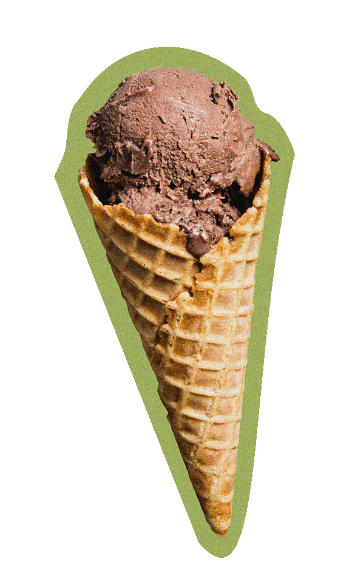
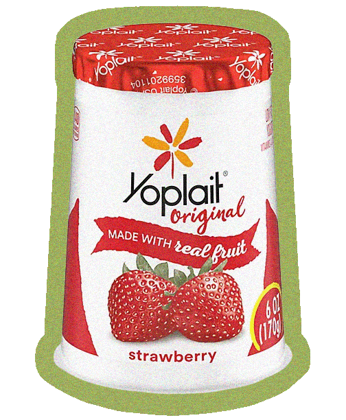
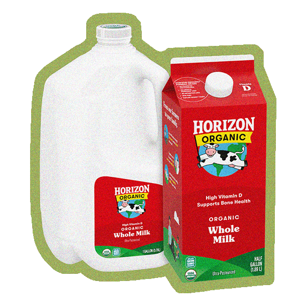
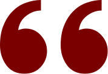

What do you look for when buying eggs?
Free Range?
Cage Free?
Natural?
What is Free Range?
2 sq ft per hen

What is Cage Free?
1.5 sq ft per hen
Maybe the eggs are the lucky ones
What is the average lifespan of a broiler chicken?
Take a guess
40
days
0
365

“The overwhelming majority of U.S. dairy operations confine lactating and dry cows in primarily indoor systems, with only 9.9% of operations primarily raising lactating cows on pasture.”

“26.3% of cows slaughtered are culled for reproductive issues.”

“Tail-docking of dairy cows—the partial amputation of up to two-thirds of the tail—is a procedure typically performed without anesthetic [...] Without a tail, the cow may suffer disproportionately from fly bites, and the pain from the remaining stump may become chronic, comparable to phantom pain in humans after limb amputation.
A USDA survey in 2001 found that 50.5% of U.S. dairy operations practiced tail-docking.”
If that's normal,
What is that mean for our future?
what does it mean for the planet?
40%
of all habitable land is used for activities related to raising and maintaining livestock
18%
of greenhouse gas emissions stem from animal agriculture. For reference, all transportation combined accounts for 13%.
1800
gallons
of water are required to produce a pound of beef, leaving a massive water footprint.
Peek into the future
The Paris Agreement defines a goal to limit global warming to 2°C above pre-industrial temperatures, while aiming for a more ambitious 1.5°C limit.
What does the year 2100 look like for our planet?
work in progress
work in progress
Ignorance is bliss
How would we fare psychologically if the walls of slaughterhouses were made of glass?
